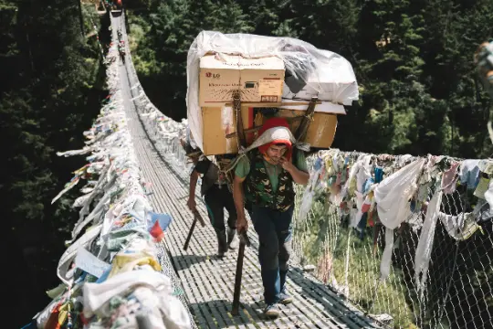
Courage
Having the strength to try new trails, face challenges, and push your limits.
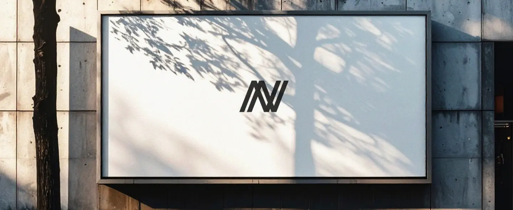

Courage
Having the strength to try new trails, face challenges, and push your limits.
Resilience
Keep going even when it’s tough, learning from every fall or setback.
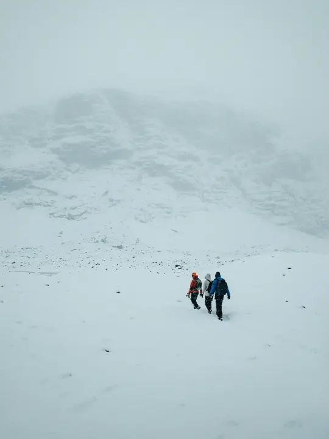
Belonging
Making everyone feel welcome, whether beginner or expert.
The symbol combines two forms
A rising edge and a
forward step.
The upward diagonal expresses courage the willingness to step into the wild and the clean, open geometry represents clarity and freedom, the mindset of those who choose to go further.
The strong, grounded base reflects resilience the foundation every explorer needs.
The two bold, forward-leaning lines taken from the logo represents movement, direction, and momentum. They represent purpose. They represent action.
As a visual system, these twin slopes become a flexible design element. They can stretch, stack, frame images, guide layouts, or act as subtle markers throughout the brand.
They are inspired by the natural geometry of the outdoors: the incline of a trail, the rise of a mountain ridge, and the steady upward push of every step taken by an explorer.
They remind the viewer of one simple truth: every
journey begins with a step and every step leans forward. they reinforce one message:
keep moving forward.
Aa
123
A B C D E F G H I J K L M N O P Q R S T U V W X Y Z
a b c d e f g h i j k l m n o p q r s t u v w x y z
0 1 2 3 4 5 6 7 8 9
~!@#$%^&*()_+{}:”<>?][‘;/.,\|
Heirarchy
H1
Saira Semibold
56px
Leading: 88
H2
Saira Medium
32px
Leading: 50
H3
Saira Medium
22px
Leading: 35
P
Saira Regular
16px
Leading: 25
Making the wild accessible so that the vast outdoors becomes every individual's playground.
To become the most trusted outdoor companion for every explorer.
What this rebrand will achieve
This shift will move us beyond being just a sports company. It will establish Nivia as a guide and enabler for the millions of Indians discovering the joy of the outdoors. We will build a reputation not on flashy marketing, but on real-world performance and trust, becoming a household name associated with quality, safety, and accessibility in adventure
This shift will move us beyond being just a sports company. It will establish Nivia as a guide and enabler for the millions of Indians discovering the joy of the outdoors. We will build a reputation not on flashy marketing, but on real-world performance and trust, becoming a household name associated with quality, safety, and accessibility in adventure
From Making Sports Gear to Creating Outdoor Gears:
We will expand from football, badminton etc to a focused range of products
designed for specific environments. This includes sturdy hiking shoes that grip
Indian rock, versatile jackets for both mountain cold and monsoon hikes, and
reliable backpacks and sleeping bags built for long days on the trail.
From Selling Products to Building Confidence:
Every product will come with clear, honest guidance on its best use. We will
build a community where beginners can learn and experienced explorers can share
knowledge, ensuring everyone feels prepared and welcome.
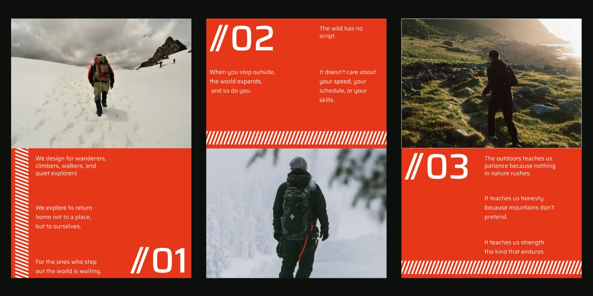
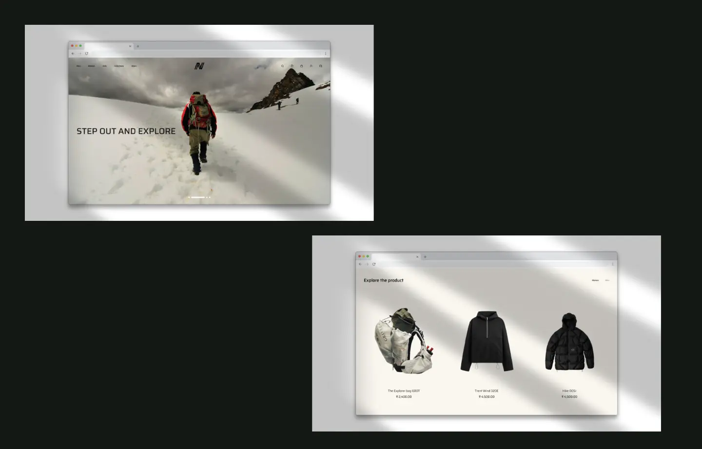
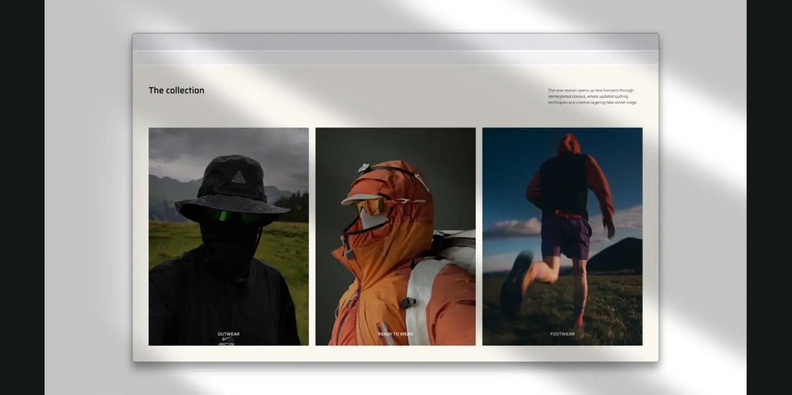
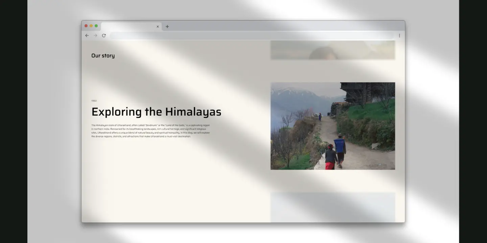
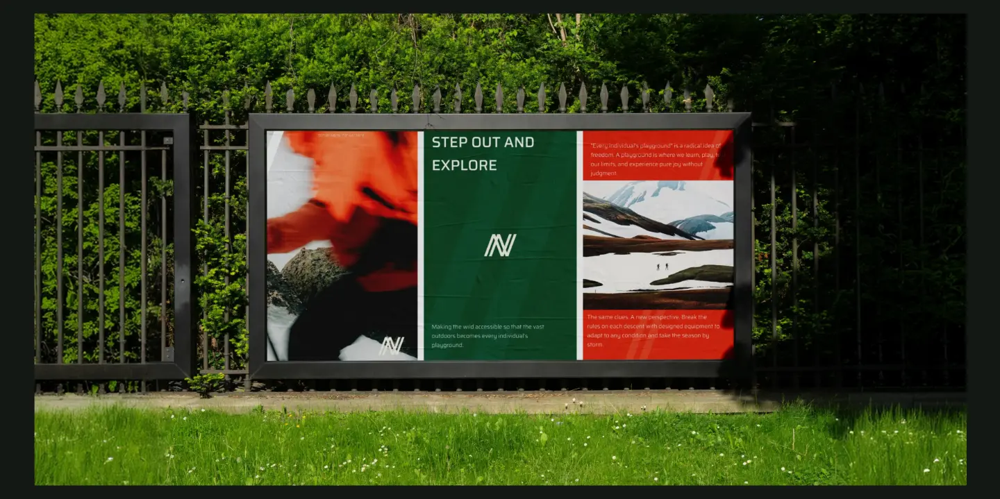
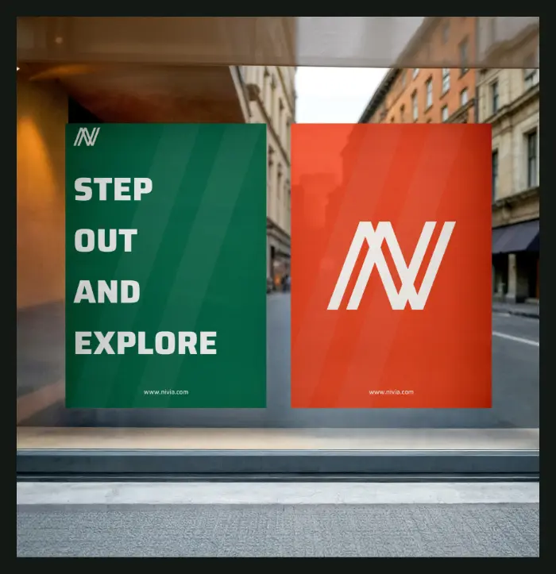
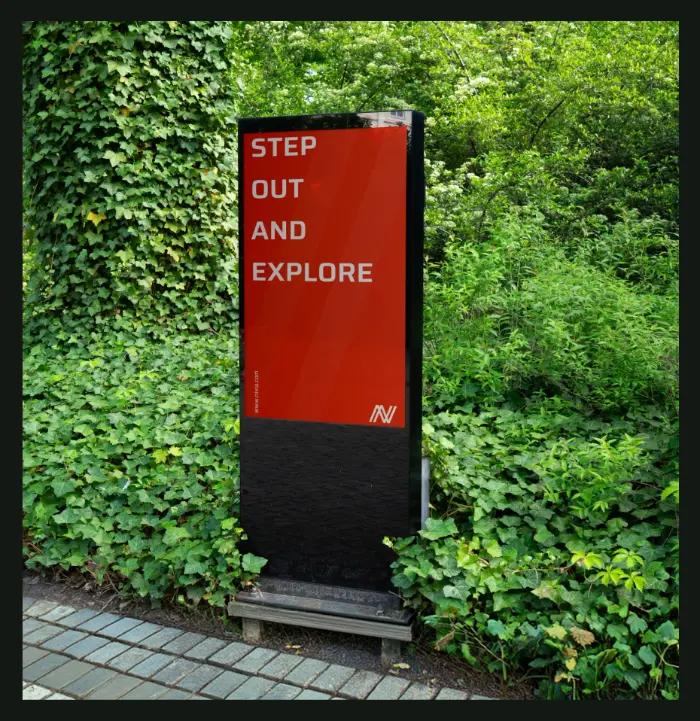
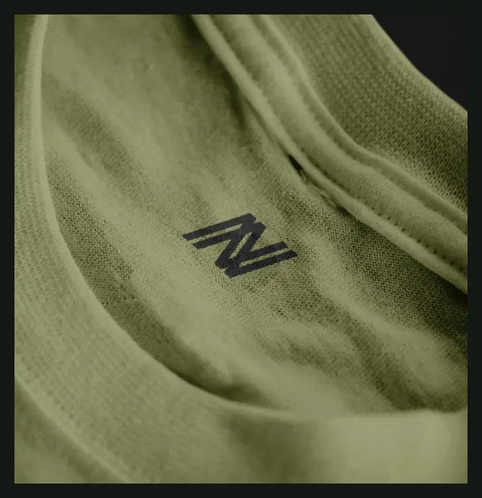
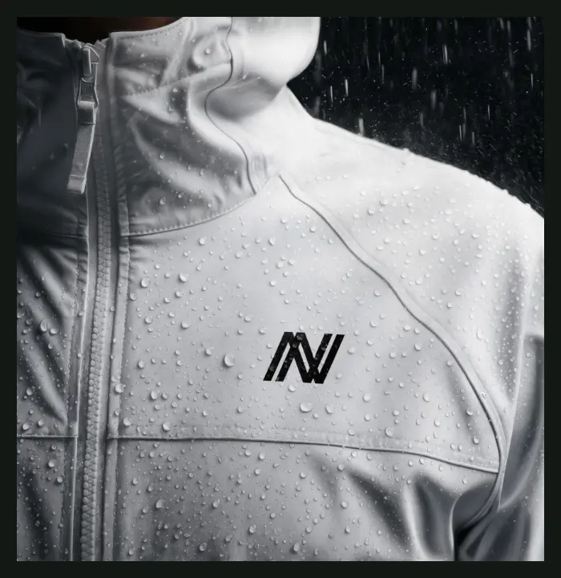
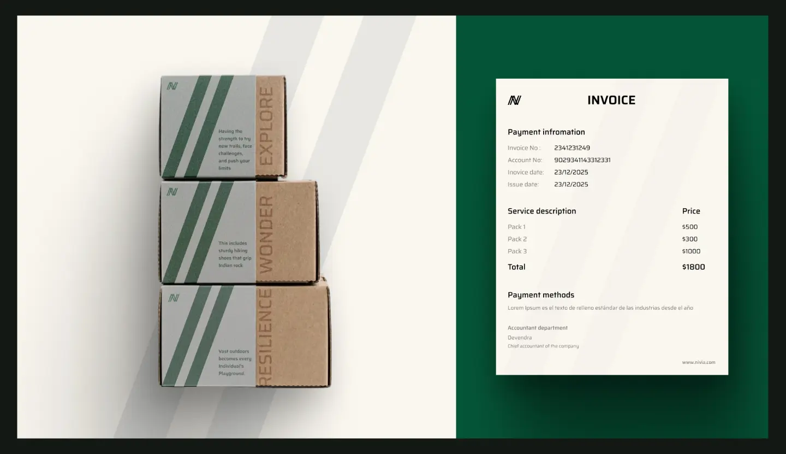
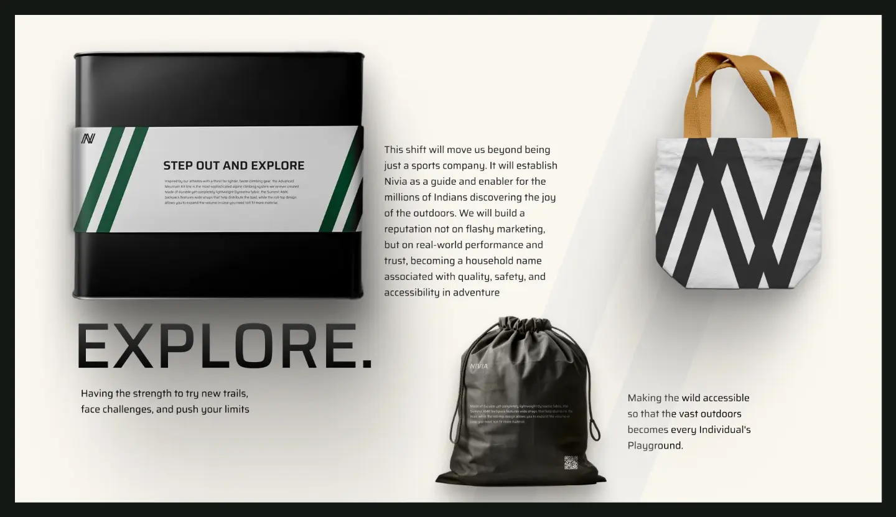
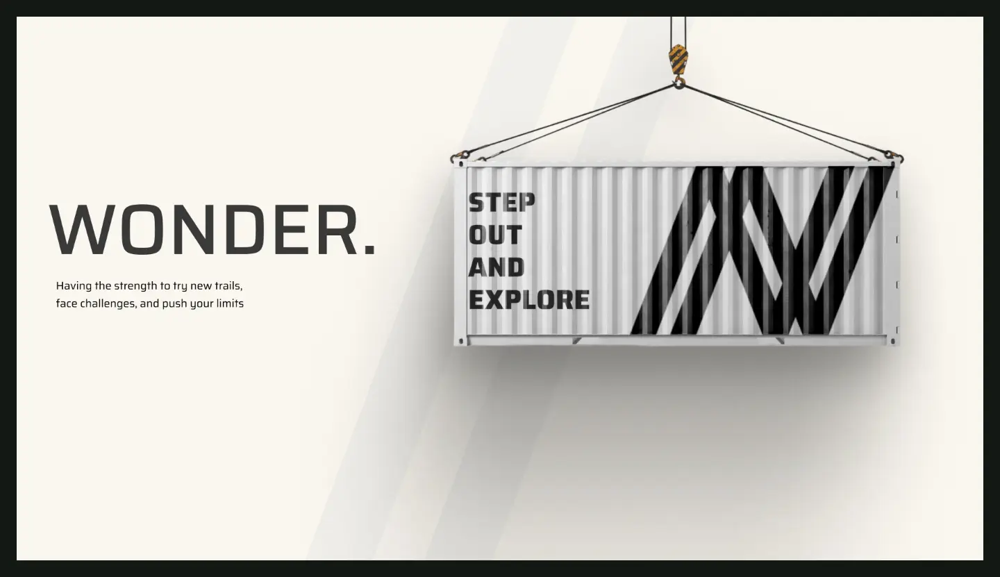
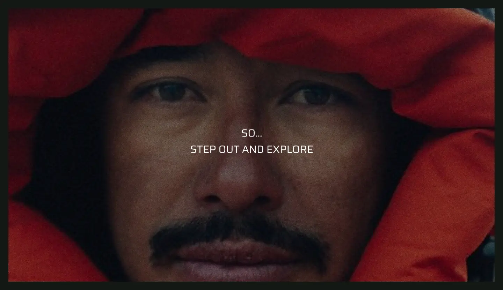
The final identity was designed to make Nivia feel more modern, bold, and consistent while keeping its connection to sports at the core.
From the logo and visual system to digital and physical applications, the identity is designed to work across different touchpoints without losing recognition.
The result is a more flexible and contemporary Nivia that can move naturally across sport, lifestyle, and digital spaces.
What I learned
This project helped me understand how a brand identity is not just a logo, but a visual system that needs to work consistently across many different contexts.
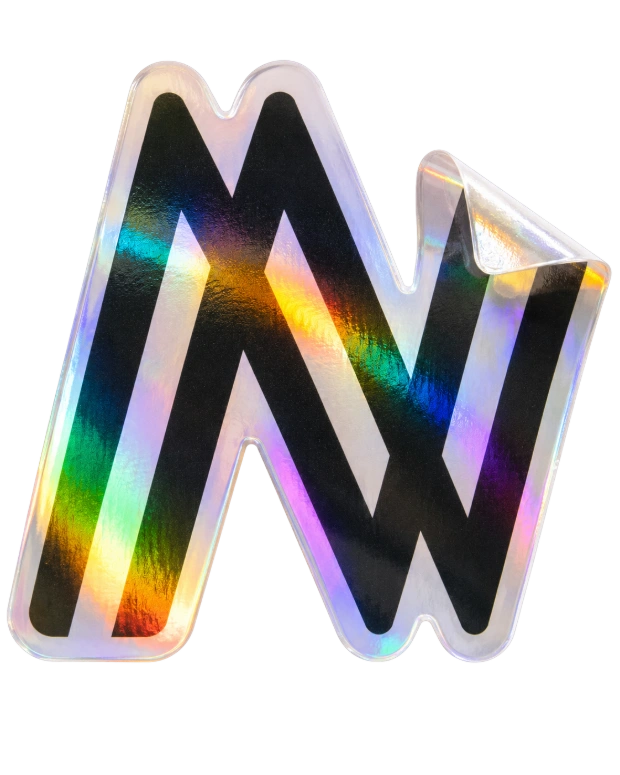